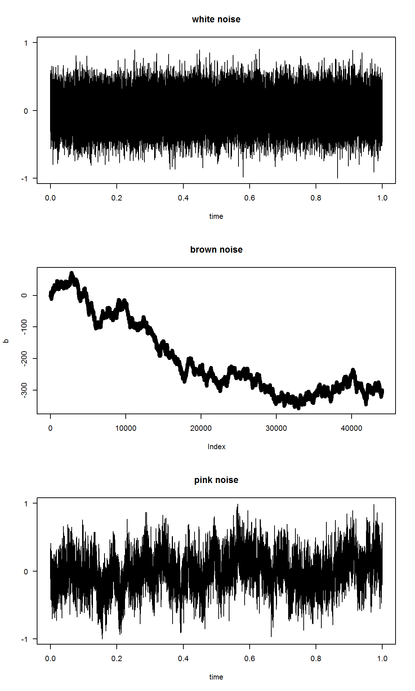

Simulating noise types (following this)
library(tuneR)
# White noise
w <- tuneR::noise(kind = c("white"))
# Brown noise is integrated white noise
# (ie. random walk)
# Use same time series length as in the other series
b <- cumsum(rnorm(length(w@left)))
# Pink noise
p <- tuneR::noise(kind = c("pink"))
# Visualize
par(mfrow=c(3,1))
plot(w,main="white noise")
plot(b,main="brown noise")
plot(p,main="pink noise")
Estimating Hurst exponent for the noises
library(pracma)
Hwhite <- hurstexp(w@left, d = 128)## Simple R/S Hurst estimation: 0.5570175
## Corrected R over S Hurst exponent: 0.5666206
## Empirical Hurst exponent: 0.5324427
## Corrected empirical Hurst exponent: 0.5169636
## Theoretical Hurst exponent: 0.5155387Hbrown <- hurstexp(b, d = 128)## Simple R/S Hurst estimation: 0.9105231
## Corrected R over S Hurst exponent: 1.008104
## Empirical Hurst exponent: 1.008534
## Corrected empirical Hurst exponent: 1.004452
## Theoretical Hurst exponent: 0.5155387Hpink <- hurstexp(p@left, d = 128)## Simple R/S Hurst estimation: 0.8732483
## Corrected R over S Hurst exponent: 0.9500707
## Empirical Hurst exponent: 0.9281414
## Corrected empirical Hurst exponent: 0.9219708
## Theoretical Hurst exponent: 0.5155387